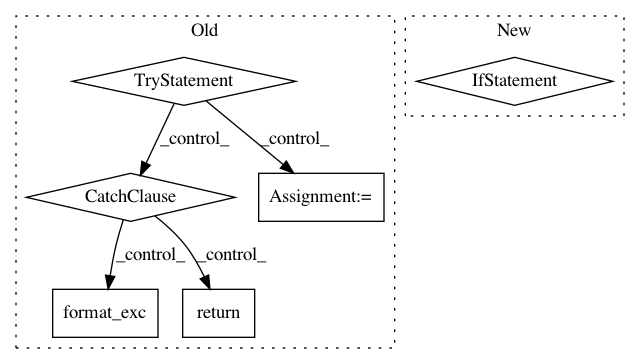

937907d721b8e4e9628b6d13bb59423e4406a5f1,src/python/pants/backend/python/tasks/pytest_run.py,PytestRun,_do_run_tests,#PytestRun#Any#Any#,348
Before Change
args.extend(test_args)
args.extend(sources)
try:
// The pytest runner we use accepts a --pdb argument that will launch an interactive pdb
// session on any test failure. In order to support use of this pass-through flag we must
// turn off stdin buffering that otherwise occurs. Setting the PYTHONUNBUFFERED env var to
// any value achieves this in python2.7. We"ll need a different solution when we support
// running pants under CPython 3 which does not unbuffer stdin using this trick.
env = {
"PYTHONUNBUFFERED": "1",
}
// If profiling a test run, this will enable profiling on the test code itself.
// Note that tests may run in a different cwd, so it"s best to set PANTS_PROFILE
// to an absolute path to make it easy to find the subprocess profiles later.
if "PANTS_PROFILE" in os.environ:
env["PEX_PROFILE"] = "{0}.subprocess.{1:.6f}".format(os.environ["PANTS_PROFILE"],
time.time())
with environment_as(**env):
rc = self._pex_run(pex, workunit, args=args, setsid=True)
return PythonTestResult.rc(rc)
except Exception:
self.context.log.error("Failed to run test!")
self.context.log.info(traceback.format_exc())
return PythonTestResult.exception()
def _pex_run(self, pex, workunit, args, setsid=False):
return pex.run(args=args, setsid=setsid,
stdout=workunit.output("stdout"), stderr=workunit.output("stderr"))
After Change
// The user might have already specified the resultlog option. In such case, reuse it.
resultlogs = [arg.split("=", 1)[-1] for arg in args if arg.startswith("--resultlog=")]
if resultlogs:
return run_and_analyze(resultlogs[-1])
else:
with temporary_file_path() as resultlog_path:
args.append("--resultlog={0}".format(resultlog_path))
return run_and_analyze(resultlog_path)
def _pex_run(self, pex, workunit, args, setsid=False):
return pex.run(args=args, setsid=setsid,
stdout=workunit.output("stdout"), stderr=workunit.output("stderr"))
In pattern: SUPERPATTERN
Frequency: 3
Non-data size: 6
Instances
Project Name: pantsbuild/pants
Commit Name: 937907d721b8e4e9628b6d13bb59423e4406a5f1
Time: 2015-04-20
Author: itay@twitter.com
File Name: src/python/pants/backend/python/tasks/pytest_run.py
Class Name: PytestRun
Method Name: _do_run_tests
Project Name: facebookresearch/visdom
Commit Name: dc43f6818bf38e9815e01bab4d0cba9c5f3ed800
Time: 2019-09-25
Author: jju@fb.com
File Name: py/visdom/server.py
Class Name: PostHandler
Method Name: post
Project Name: horovod/horovod
Commit Name: d0e30e8810abfa506f67e2cf957a30e2f281f69e
Time: 2020-03-31
Author: github@enrico.minack.dev
File Name: horovod/run/mpi_run.py
Class Name:
Method Name: _get_mpi_implementation_flags